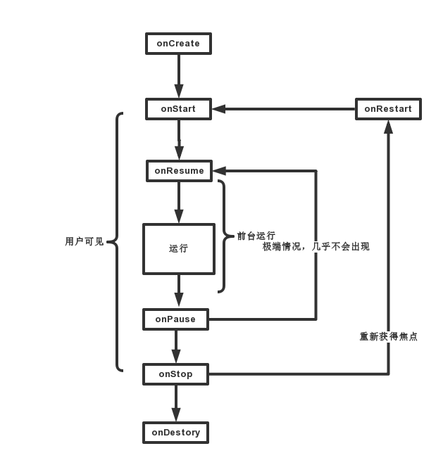
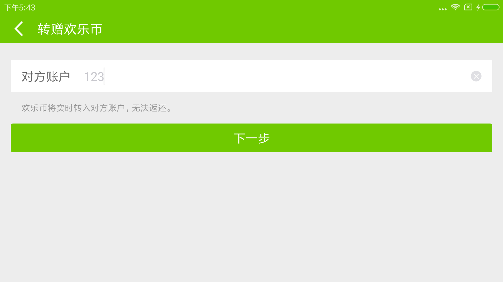
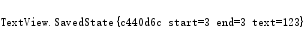

前言
本文是Android开发艺术探索的读书笔记第一篇。这不是我第一次读这本书，但应该说我第一次打算系统地读这本书，并留下点记录加深印象和理解。
所谓正常情况，指的是Activity的 创建->运行->销毁 整个过程不被其它事情打断(比如屏幕旋转)。
所谓异常情况，主要有2类：
其一是onConfigurationChanged，比如屏幕发生旋转；其二是内存不足。
正常情况Activity生命周期总图

其中，
- onCreate()和onDestory()是“存在”的维度结对的。一个Activity只能onCreate()一次，也只能onDestory()一次，对应Activity的创建和销毁。
- onStart()和onStop()是“可见”的维度结对的。onStart()后Activity处于可见状态，但还在后台；onStop后Activity不可见。
- onResume()和onPause()是“在前台”的维度结对的。onResume()后Activity处于前台，可以和用户交互；onPause()后，Activity可见但已不在前台。
question
问题1：
Q：Activity A中启动Activity B，其生命周期过程是怎样的？
A：A.onPasue() -> B.onCreate() -> B.onStart() -> B.onResume()->A.onStop()
注：如果B透明，则A不会onStop()。onStop()后Activity不可见。
在com.android.server.am.ActivityStack的resumeTopActivityInnerLocked()方法中有一句注释：1
2// We need to start pausing the current activity so the top one
// can be resumed...
前一个Activity执行onPause()后才会创建后一个Activity。也正因此，不能在onPause()中执行过重的操作，会影响后面Activity的展示速度。
问题2
Q：问题1中，从Activity B回退到Activity A，其生命周期过程是怎样的？
A：如果B非透明，则为：B.onPause()->A.onRestart()->A.onStart()->A.onResume->B.onStop()->B.onDestory()；
如果B透明，则为：B.onPausee()->A.onResume()->B.onStop()->B.onDestory()。
问题1中已经提到过，如果B是透明的，A是不会onStop()的，A一直处于可见状态，只需要执行onResume()就回到前台了。
异常情况之onConfigurationChanged
以旋转屏幕为例
生命周期过程
默认情况下，旋转屏幕后，系统会把当前状态保存到Bundle中，然后销毁界面重新创建一个新界面，再从Bundle中恢复数据。其过程如下：
onPause()->onSaveInstanceState()->onStop()->onDestory()
->onCreate()->onStart()->onRestoreInstanceState()->onResume
如图界面：有一个EditText，输入值为“123”

旋转屏幕，打印Bundle，其中关于这个EditText(extends TextView)的信息如下：

这个TextView.SavedState就是保存下来的TextView的数据了。1
2
3
4
5
6
7
8
9
10
11/**
* User interface state that is stored by TextView for implementing
* {@link View#onSaveInstanceState}.
*/
public static class SavedState extends BaseSavedState {
int selStart;
int selEnd;
CharSequence text;
boolean frozenWithFocus;
CharSequence error;
}
在系统调用了Activity的onSaveInstanceState()方法后，最终都会分发到这个Activity内的每个View中。onRestoreInstanceState()同理。
以TextView的onRestoreInstanceState()方法为例，它就是从SavedState中读出数据恢复TextView的各个状态（输入值、选中状态…）。1
2
3
4
5
6
7
8
9
10
11
12
13
14
15
16
17
18
19
20
21
22
23
24
25
26
27
28
29
30
public void onRestoreInstanceState(Parcelable state) {
……
SavedState ss = (SavedState)state;
super.onRestoreInstanceState(ss.getSuperState());
if (ss.text != null) {
setText(ss.text);
}
if (ss.selStart >= 0 && ss.selEnd >= 0) {
if (mText instanceof Spannable) {
int len = mText.length();
if (ss.selStart > len || ss.selEnd > len) {
String restored = "";
if (ss.text != null) {
restored = "(restored) ";
}
} else {
Selection.setSelection((Spannable) mText, ss.selStart, ss.selEnd);
if (ss.frozenWithFocus) {
createEditorIfNeeded();
mEditor.mFrozenWithFocus = true;
}
}
}
}
……
}
可以设置android:configChanges属性，使之不进行销毁重建。
异常情况之内存不足的情况
这种情况下，系统会按照Activity的优先级，回收低优先级的Activity。其过程也是先调用onSaveInstanceState()，等到需要展示的时候再通过onRestoreInstanceState()恢复Activity。
优先级：前台Activity > 可见的后台Activity > 不可见Activity